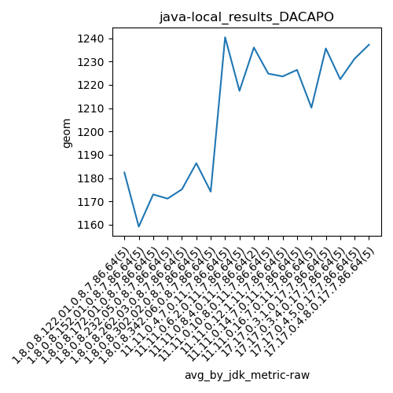
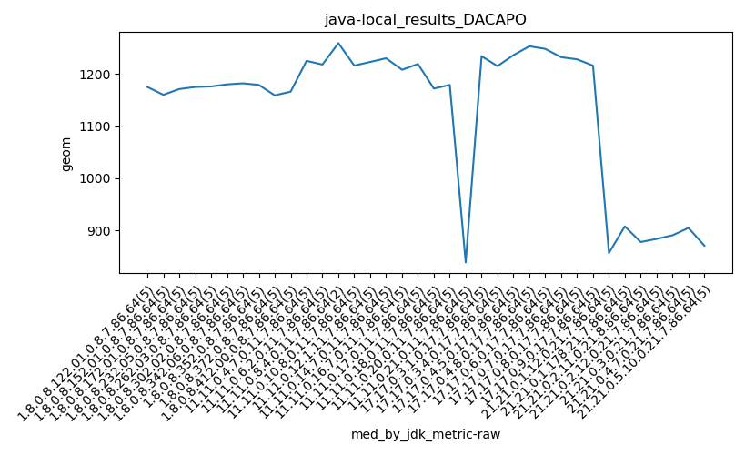
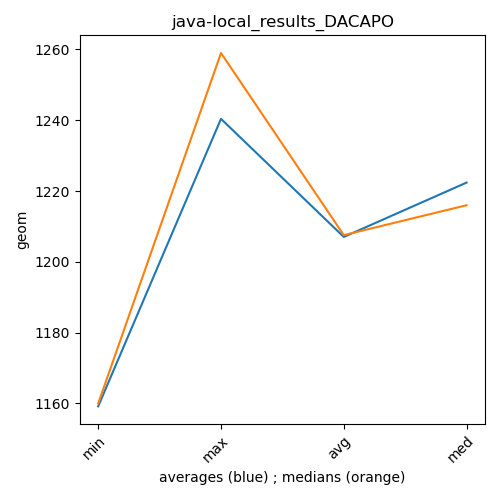

java- DACAPO
Context at bottom
/home/jvanek/git/benchmarks-in-nested-virtualisation-toolchain/final_results/local_results/local_results_J2DBENCH
java-
DACAPO
/home/jvanek/git/benchmarks-in-nested-virtualisation-toolchain/final_results/local_results/local_results_SPECJBB
java-
DACAPO
/home/jvanek/git/benchmarks-in-nested-virtualisation-toolchain/final_results/local_results/local_results_RADARGUNs1
java-
DACAPO
/home/jvanek/git/benchmarks-in-nested-virtualisation-toolchain/final_results/local_results/local_results_RADARGUNs3
java-
DACAPO
/home/jvanek/git/benchmarks-in-nested-virtualisation-toolchain/final_results/local_results/local_results_JMH
java-
DACAPO
/home/jvanek/git/benchmarks-in-nested-virtualisation-toolchain/final_results/local_results/local_results_DACAPO
java-
DACAPO
local_results_DACAPO
final score
Expected number of java- JDKs: 37
1st avgmed_alljdks_metric:
/home/jvanek/git/benchmarks-in-nested-virtualisation-toolchain/final_results/result_processing.py /home/jvanek/git/benchmarks-in-nested-virtualisation-toolchain/final_results/local_results/local_results_DACAPO geom False
values: [1175, 1170, 1191, 1210, 1166, 1132, 1160, 1188, 1146, 1170, 1177, 1139, 1169, 1171, 1209, 1188, 1175, 1144, 1170, 1179, 1170, 1151, 1193, 1176, 1186, 1176, 1224, 1180, 1188, 1164, 1196, 1191, 1151, 1182, 1151, 1175, 1179, 1182, 1159, 1182, 1145, 1159, 1119, 1166, 1167, 1166, 1208, 1175, 1166, 1122, 1240, 1187, 1218, 1225, 1332, 1219, 1191, 1248, 1211, 1218, 1259, 1213, 1216, 1225, 1208, 1263, 1212, 1223, 1178, 1229, 1303, 1185, 1279, 1240, 1186, 1230, 1197, 1248, 1199, 1217, 1179, 1208, 1241, 1204, 1219, 1231, 1160, 1145, 1174, 1157, 1198, 1172, 1140, 1179, 1200, 1201, 1150, 894, 831, 885, 823, 839, 1190, 1254, 1277, 1223, 1234, 1215, 1194, 1232, 1261, 1210, 1246, 1236, 1248, 1190, 1236, 1253, 1177, 1284, 1270, 1202, 1248, 1227, 1206, 1268, 1268, 1260, 1224, 1232, 1283, 1198, 1192, 1175, 1248, 1228, 1283, 1227, 1216, 1210, 1198, 1223, 846, 892, 873, 857, 851, 878, 965, 873, 908, 930, 858, 867, 878, 906, 901, 883, 910, 874, 899, 884, 891, 925, 887, 870, 914, 905, 881, 867, 933, 907, 985, 881, 846, 871, 851]

Expected number of iterations: 5
final number of values: 177 out of 185
Pass rate: 95.7%
values: (823, 1332, 1131.0734463276835, 1182)

** accuracy from all jdks and runs
more is better
MIN: 823
MAX: 1332
AVG: 1131.0734463276835
MED: 1182
Relative differences 1:
MIN-MAX: 38.0 %
MIN-AVG: 27.0 %
MIN-MED: 30.0 %
MAX-MIN: -62.0 %
MAX-AVG: -18.0 %
MAX-MED: -13.0 %
AVG-MED: 4.0 %
stored to java-.properties. sort | uniq that!
2nd avgmed_by_jdk_metric:
values: [1182.4, 1159.2, 1173.0, 1171.2, 1175.2, 1186.4, 1174.2, 1175.4, 1151.2, 1167.4, 1240.4, 1217.4, 1236.0, 1224.8, 1223.6, 1226.4, 1210.2, 1211.0, 1169.2, 1174.0, 854.4, 1235.6, 1222.4, 1231.2, 1237.2, 1243.4, 1239.4, 1225.2, 1214.8, 863.8, 910.8, 882.0, 890.0, 897.4, 898.6, 886.8]

values: [1175, 1160, 1171, 1175, 1176, 1180, 1182, 1179, 1159, 1166, 1225, 1218, 1259, 1216, 1223, 1230, 1208, 1219, 1172, 1179, 839, 1234, 1215, 1236, 1253, 1248, 1232, 1228, 1216, 857, 908, 878, 884, 891, 905, 871]

values: (854.4, 1243.4, 1132.822222222222, 1182.4)
values: (839, 1259, 1132.4166666666667, 1180)

** accuracy from all jdks where runs were avged
more is better
MIN: 854.4
MAX: 1243.4
AVG: 1132.822222222222
MED: 1182.4
Relative differences 1:
MIN-MAX: 31.0 %
MIN-AVG: 25.0 %
MIN-MED: 28.0 %
MAX-MIN: -46.0 %
MAX-AVG: -10.0 %
MAX-MED: -5.0 %
AVG-MED: 4.0 %
stored to java-.properties. sort | uniq that!
** accuracy from all jdks where runs were medianed
more is better
MIN: 839
MAX: 1259
AVG: 1132.4166666666667
MED: 1180
Relative differences 1:
MIN-MAX: 33.0 %
MIN-AVG: 26.0 %
MIN-MED: 29.0 %
MAX-MIN: -50.0 %
MAX-AVG: -11.0 %
MAX-MED: -7.0 %
AVG-MED: 4.0 %
stored to java-.properties. sort | uniq that!
pass rates:
local_results_DACAPO=95.7%
Context:
- local_results
- DACAPO